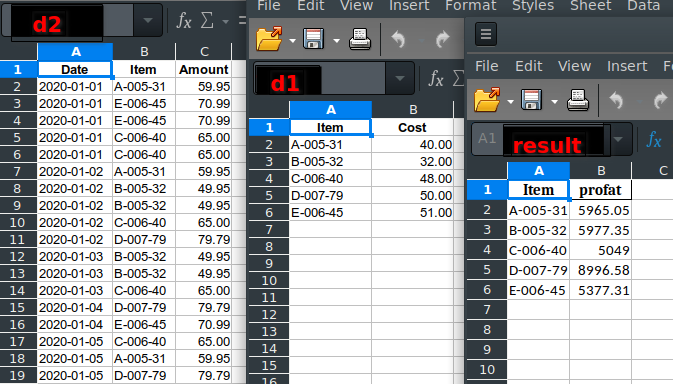

Using SQL on Spreadsheets
A Python Desktop GUI

When Launch is checked, the result is opened in LibreOffice Calc.
When Log is checked, the input file paths and SQL code is appended to a log file.
There is a limit of seven input tables (files: spreadsheet or csv)
Clicking on an input file lets you open the spreadsheet/csv or view the columns and data types.

The following is an example of a saved query setup file. sql_sample.txt
d1: /home/user/python/projects/sqlcells/testfiles/sampledatainsnames.xlsx
d2: /home/user/python/projects/sqlcells/testfiles/sampledatainsurance.xlsx
SQL
select d1.Policy, last_name, first_name, Expiry, State, InsuredValue
from d1, d2
order by State, Expiry, last_name
OUTPUT
/home/user/python/projects/sqlcells/out.xlsx
LAUNCH
LOG
An existing query can be run in an unattended or batch mode by using the saved query setup file as an argument at startup:
$ python3 sqlcells.py sql_sample.txt
The Launch and Log options will still apply as they were set when saved.